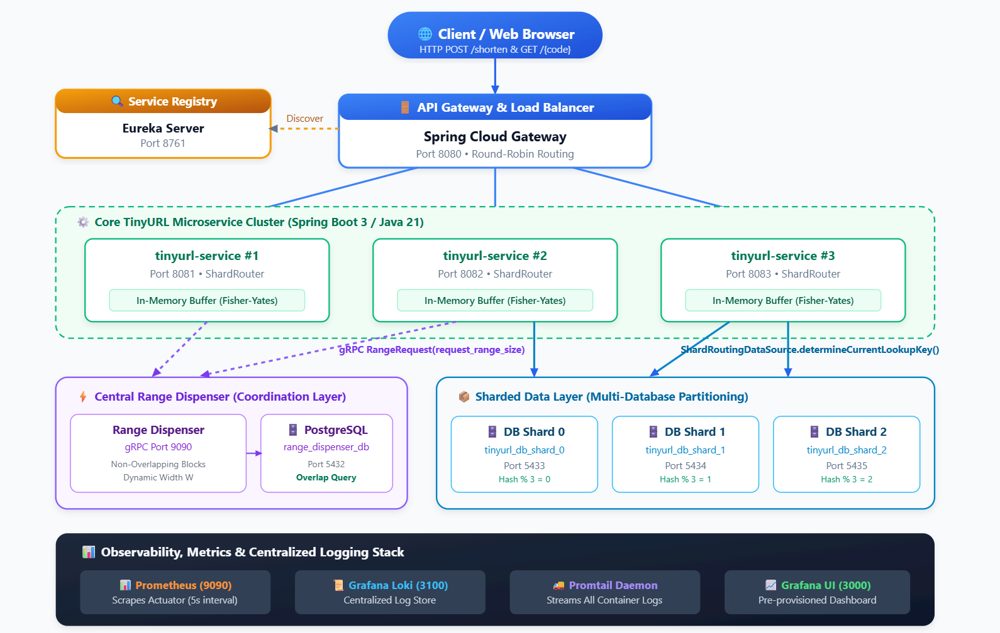
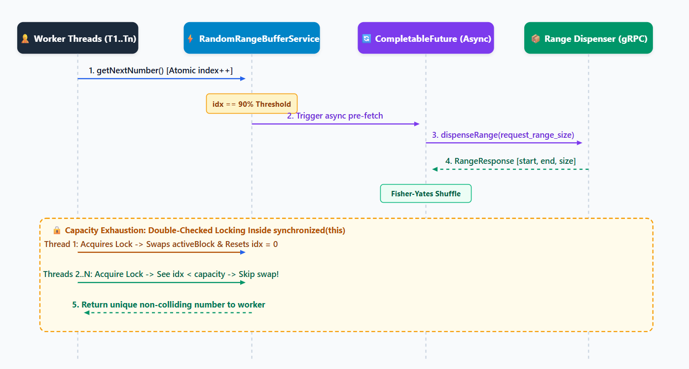

Building a production-ready, distributed system from scratch is rarely a linear journey. Setting out to build a highly scalable TinyURL system using modern cloud-native standards—Spring Boot 3 (Java 21), gRPC, Spring Cloud (Eureka & API Gateway), multi-database PostgreSQL sharding, Prometheus/Grafana observability, Loki log aggregation, and Kubernetes manifests— I chose to pair program with an autonomous AI coding agent (Antigravity).
It began with an one "Mega-Prompt" which quickly evolved through deep architectural iterations: eliminating multi-threaded race conditions, deriving dynamic database shard routing without configuration drift, enabling dynamic range block sizing with PostgreSQL interval intersection guarantees, and getting complete 14-container monitoring topology up and running.
In this article, I will share the architectural blueprint of the system, the chronological evolution of the codebase, and most importantly, practical takeaways on how to drive AI agents efficiently using high-density, constraint-driven prompts and why continuous human code auditing remains non-negotiable.
The System Design Blueprint
At its core, a scalable URL shortener must satisfy several hard requirements:
- Massive Capacity & Compact URLs: 6-character Base62 alphanumeric short codes
[a-zA-Z0-9], yielding about 56.8 Billion unique combinations. - Zero Key Collisions & High Throughput: Guaranteeing uniqueness without costly centralized database locks or synchronous coordination per HTTP request.
- Horizontal Partitioning (Database Sharding): Distributing URL mappings across multiple isolated PostgreSQL databases based on consistent hash routing.
- Resilient Observability & Monitoring: Sub-second metric scraping via Prometheus, centralized log streaming with Grafana Loki and Promtail, and auto-provisioned Grafana dashboards.
End-to-End System Topology

The Initial "Mega-Prompt" & Kickoff
I started by giving the agent a comprehensive, multi-paragraph architectural specification—a "mega-prompt"—detailing the exact multi-module project structure, database schemas, gRPC protobuf contracts, Spring Cloud components, and Docker Compose topology.
However, complex distributed systems are not built in a single prompt. Real-world edge cases, multi-threaded concurrency traps, and configuration drift require continuous refinement.
Deep Iterations & Solving Real Bugs
1. Concurrency Trap: Thread Contention & Duplicate Range Allocation
In RandomRangeBufferService.java, each instance of tinyurl-service maintains an in-memory buffer of numbers pre-shuffled via Fisher-Yates shuffle. When 90% of the block is consumed, an asynchronous pre-fetch is triggered.

The Bug Found During Code Review:
Initially, when the active block was exhausted (idx >= BLOCK_SIZE), multiple threads waiting on synchronized (this) would each invoke fetchAndShuffleBlock() one after another. This caused multiple gRPC range fetches, discarding valid numbers and causing heavy lock contention.
The Fix (Double-Checked Locking):
We instructed the agent with a targeted prompt to introduce double-checked locking inside the synchronized block:
public long getNextNumber() {
while (true) {
int idx = currentIndex.getAndIncrement();
int currentBlockSize = activeBlock.length;
int refillThreshold = (int) (currentBlockSize * (refillThresholdPercentage / 100.0));
if (idx == refillThreshold) {
// Trigger async pre-fetch at dynamic threshold
if (prefetchTriggered.compareAndSet(false, true)) {
log.info("Reached threshold {}/{}. Triggering async pre-fetch.", refillThreshold, currentBlockSize);
nextBlockFuture = CompletableFuture.supplyAsync(this::fetchAndShuffleBlock);
}
}
if (idx < currentBlockSize) {
return activeBlock[idx];
}
// Block exhausted: Double-check inside synchronized block before swapping
synchronized (this) {
if (currentIndex.get() >= activeBlock.length) {
log.info("Active block exhausted. Swapping with pre-fetched block...");
long[] newBlock;
if (nextBlockFuture != null) {
newBlock = nextBlockFuture.join();
this.nextBlockFuture = null;
} else {
newBlock = fetchAndShuffleBlock();
}
this.activeBlock = newBlock;
this.currentIndex.set(0);
this.prefetchTriggered.set(false);
}
}
}
}
2. Single-Source-of-Truth Dynamic Shard Routing
Initially, UrlMappingService routed keys using a hardcoded modulo: Math.abs(code.hashCode()) % 3.
When starting the application with set number of database shards, hardcoding % 3 or having a separate tinyurl.sharding.count property in application.yml creates configuration drift if someone adds a fourth datasource under spring.datasource but forgets to update the count.
ShardRoutingDataSource had to be refactored to dynamically track the count of registered target datasources (targetDataSources.size()):
public class ShardRoutingDataSource extends AbstractRoutingDataSource {
private int shardCount = 1;
@Override
public void setTargetDataSources(Map<Object, Object> targetDataSources) {
super.setTargetDataSources(targetDataSources);
if (targetDataSources != null && !targetDataSources.isEmpty()) {
this.shardCount = targetDataSources.size();
}
}
public int getRegisteredShardCount() {
return shardCount;
}
@Override
protected Object determineCurrentLookupKey() {
return DbContextHolder.getShardIndex();
}
}
And ShardRouter delegates dynamically:
@Component
public class ShardRouter {
private final ShardRoutingDataSource routingDataSource;
public ShardRouter(ShardRoutingDataSource routingDataSource) {
this.routingDataSource = routingDataSource;
}
public int getShardIndex(String code) {
if (code == null) return 0;
return Math.abs(code.hashCode()) % routingDataSource.getRegisteredShardCount();
}
}
3. Dynamic Range Size Allocation with Interval Overlap Protection
In the latest iteration, tinyurl-service was updated to specify its own desired buffer width (e.g. tinyurl.range.buffer-size: 5000 or 10000).
To guarantee that different range widths never produce overlapping keyspaces, RangeDispenserAllocationService uses SQL interval intersection queries:
@Query("SELECT COUNT(r) > 0 FROM DispensedRange r WHERE r.startValue <= :endValue AND r.endValue >= :startValue")
boolean existsOverlappingRange(@Param("startValue") Long startValue, @Param("endValue") Long endValue);
The Art of Prompting: Precision vs. Ambiguity
One of the biggest lessons from this project is the direct correlation between prompt quality and agent efficiency.
When working with autonomous AI agents, vague prompts lead to hallucinations, broken assumptions, and wasted iteration loops. High-density, constraint-driven prompts lead to clean, single-pass implementations.
| Aspect | Vague / Ambiguous Prompting | High-Precision Constraint Prompting |
|---|---|---|
| Locality | "The buffer has some multi-threading issues, please fix it." | "In RandomRangeBufferService.java at getNextNumber(), threads waiting on synchronized(this) call fetchAndShuffleBlock() multiple times upon exhaustion. Implement double-checked locking on currentIndex.get() >= activeBlock.length." |
| Configuration | "Make the database shards dynamic." | "In tinyurl-service, derive the shard count directly from targetDataSources.size() in ShardRoutingDataSource so ShardRouter has a single source of truth without redundant YAML properties." |
| Contracts | "Update the range dispenser." | "Update range_dispenser.proto to add int32 request_range_size = 2 to RangeRequest. In range-dispenser-service, check interval overlaps using r.startValue <= :endValue AND r.endValue >= :startValue." |
| Execution Mode | Jumping straight into random code edits. | Using /plan mode to review architectural changes, diffs, and verification strategies before touching code. |
Why Continuous Human Code Auditing is Non-Negotiable
AI coding assistants are exceptionally capable at boilerplate generation, API wiring, and refactoring. However, the human engineer remains the architect and primary auditor.
Throughout the sessions, active code auditing caught critical items that automated linters alone would miss:
- Subtle Concurrency & State Invariants: Identifying race conditions where multiple threads wake up from lock contention.
- Configuration Drift: Catching decoupled configuration keys (
tinyurl.sharding.countvsspring.datasource.shard*) and enforcing single-source architectures. - Database Schema Correctness: Ensuring PostgreSQL tables, unique constraints, and sequence types align with long-term keyspace capacities (56.8B numbers exceeding 32-bit integers require
int64/BIGINT). - Dependency Hygiene: Eliminating duplicate Maven dependencies (such as duplicate
postgresqldriver entries) and managing gRPC BOM version alignment.
Production Kubernetes Topology
All configurations, health checks, and metrics endpoints are baked into clean, production-grade Kubernetes manifests under the k8s/ directory:
k8s/
├── 01-service-registry.yaml # Eureka Server + Actuator Probes
├── 02-range-dispenser.yaml # Range Dispenser + PostgreSQL StatefulSet
├── 03-tinyurl-shards.yaml # 3x PostgreSQL DB Shard StatefulSets
├── 04-tinyurl-service.yaml # 3x TinyURL Pods + Dynamic Range Configs
├── 05-api-gateway.yaml # Spring Cloud Gateway LoadBalancer
└── 06-monitoring-logging.yaml # Prometheus, Loki, Promtail & Grafana
To deploy the entire stack to Kubernetes cluster:
kubectl apply -f k8s/
Conclusion
Pair programming with an AI agent to build a distributed system is like having a high-speed junior/mid-level developer pairing with a senior architect.
When you provide clear, bounded architectural requirements, use structured planning modes, and rigorously audit the generated code, you can build, containerize, and test complex microservices architectures in a fraction of the traditional development time.
The full source code, Kubernetes manifests, and Grafana dashboard configurations are available on GitHub:
github.com/jeetprksh/system-design-tinyurl